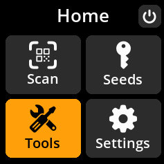
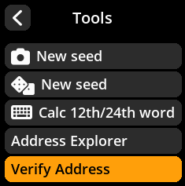
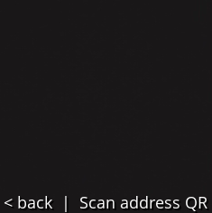
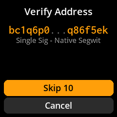

🛡️ Verification and Security
Verify Address Ownership
Confirm that a specific Bitcoin address was actually generated by your loaded seed. This is crucial for verifying that addresses shared with you are legitimate.
Complete Step-by-Step Process with All Screenshots
Navigate: From Home screen → “Tools” → “Verify Address”



Enter Address: Select the seed address you want to verify by choosing a saved seed, scanning a new seed, or manually entering a 12/24-word seed phrase.

Review Results:
🔍 Address Searching - Deriving address from loaded seed — may take time.
✅ Address Found - The address belongs to your loaded seed


🚨 Security Use Case: Use this feature to verify that addresses provided by exchanges, merchants, or other parties were actually generated by your seed before sending funds. Never send Bitcoin to unverified addresses.